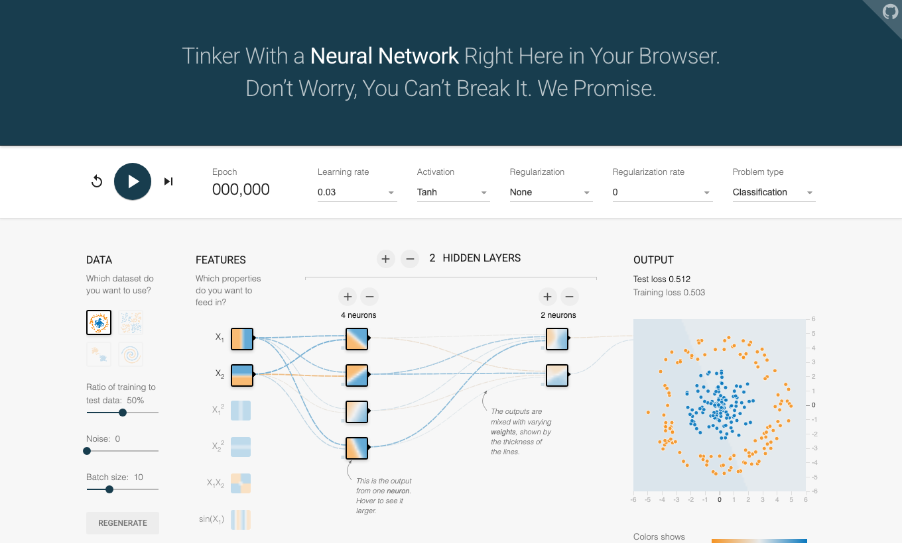

Idea A
Mini neural playground
2D dataset, няколко слоя и жива визуализация на decision boundary.
README.md, design-notes.md.Mini playground mock

Reference screenshot for inspiration only: TensorFlow Playground.
Idea A
2D dataset, няколко слоя и жива визуализация на decision boundary.
Idea B
Опростен интерфейс тип Scratch, в който потребителят сглобява малък модел.
Idea C
Показва как loss, learning rate, noise или features влияят на резултата.